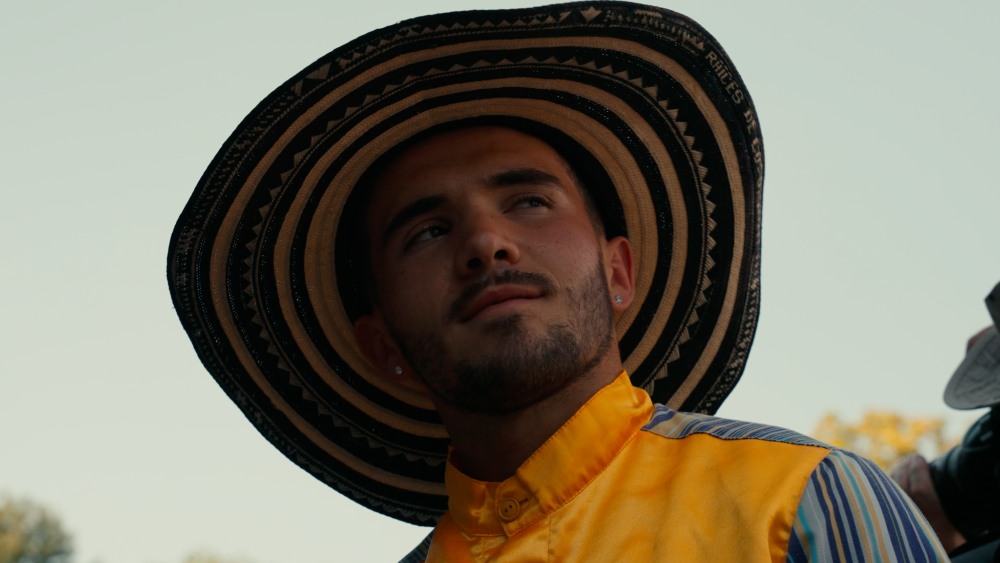
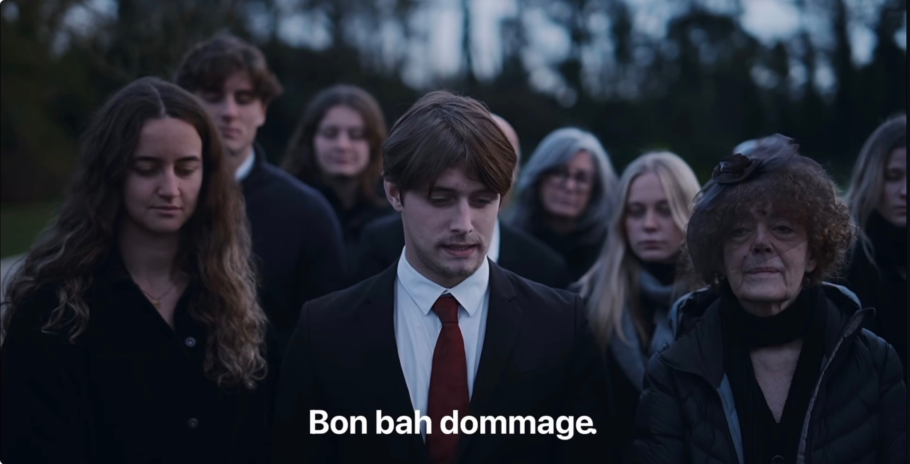
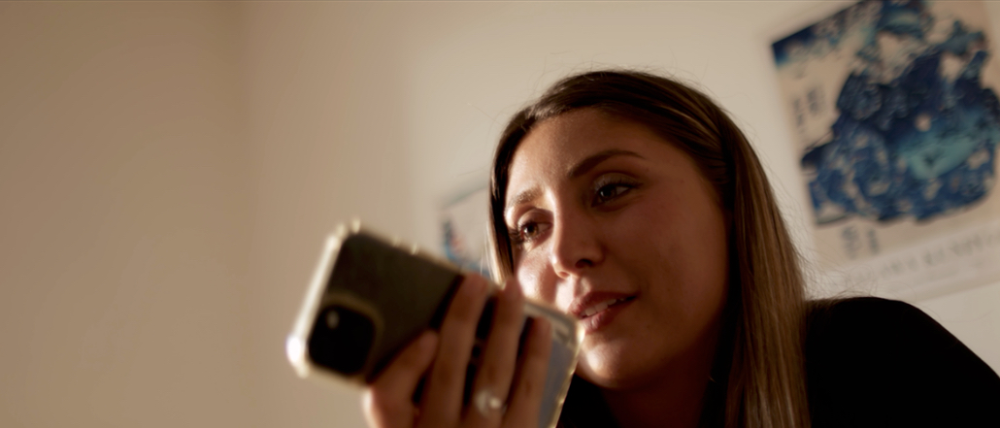

Festival de Montoire 2025Film événementiel · 25 minRéalisation · cadrage · montage · étalonnage↗
Spot de prévention — Violences faites aux femmesSpot étudiant · Réal. Mano TurpaultCheffe électricienne↗
Bon anniversaire mon amourCourt-métrage · défi 48 hCo-réalisation avec Olivia Maillot · scénario↗